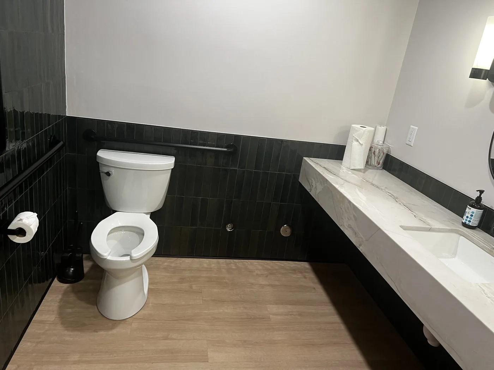

Turnover cleaning
Airbnb and VRBO reset
From $119
Final price depends on bedrooms, bathrooms, square footage, laundry, condition, pets, supplies, same-day windows, and special requests.
Get my exact quotePark City Airbnb cleaning
Sun Ray Cleaning helps Park City hosts, second-home owners, and property managers keep rentals clean, calm, and ready between guests without guessing on price or scope.

Turnover cleaning
Park City rentals need a cleaning plan that respects checkout times, owner standards, seasonal grit, mountain dust, bathrooms guests inspect closely, and kitchens that have to feel ready the moment the next group walks in.
For the broader service overview, see Sun Ray's short-term rental cleaning page. For local context, see the Park City cleaning page.
Planning price
This gives hosts a practical starting point. Sun Ray confirms the exact quote after reviewing the property, timing, access, and requested scope.
Final price depends on bedrooms, bathrooms, square footage, laundry, condition, pets, supplies, same-day windows, and special requests.
Get my exact quoteAddress or neighborhood, bedroom and bathroom count, checkout/check-in times, photos if available, access notes, and any must-clean priorities.
Text details to Sun RayStarting prices are planning anchors, not flat guarantees. Sun Ray uses no-surprise quotes because every rental turnover is different.
Photo proof
Use these examples to understand the kind of kitchens, living areas, and bathrooms Sun Ray is built to reset.
Clean counters, sinks, appliance fronts, and high-touch kitchen surfaces help the next guest feel immediately at home.

Living rooms need a calm, guest-ready look after luggage, ski gear, pets, kids, and back-to-back stays.

Bathrooms carry trust. Mirrors, fixtures, tubs, showers, toilets, and floors need the most visible polish.
Park City rental areas
Sun Ray is a strong fit for Park City rentals, owner stays, and second homes in the places where guest schedules and mountain-home cleaning details matter most.
Airbnb cleaning FAQs
Related guides
What affects turnover pricing, from beds and baths to laundry, supplies, and same-day windows.
Read guide Airbnb/VRBOA practical turnover guide for owners and hosts who need guest-ready cleans in Park City.
Read guideReady for the next turnover?
Send the neighborhood, bedroom and bathroom count, timing, access notes, laundry expectations, and any must-clean priorities.